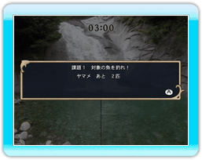
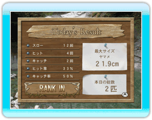
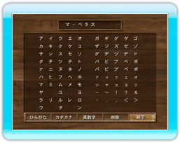

11 |
Challenge Mode |
 |
| 
●Challenge Modeとは
出題される課題を クリアして遊ぶモードです。 制限時間内に課題の魚を 釣り上げると 課題クリアとなり、 新しい課題が表示されます。 制限時間内に課題をクリア出来なかった場合、 TIME UPとなります。 |
|
●メニュー
－ボタンを押すとメニューが表示されます。 ・タックル選択：ルアーを変更します。(P.8） ・操作説明：ゲーム中の操作方法が確認できます。 ・課題：課題内容を確認できます。 ・タイトルに戻る：タイトル画面に戻ります。 ・オプション：ガイドメッセージのON/OFFと ゲーム中の音量を設定します。（P.14） ※リーリング中やファイト中はメニュー表示できません。 |
|
●リトライについて
TIME UPになると、リトライの選択が表示されます。 「はい」を選択した場合リトライとなり、 失敗した課題を開始できます。 ※リトライすると課題内の釣果はリセットされます。 「いいえ」を選択した場合は、「本日の釣果」が 表示されます。 |
| 
●本日の釣果
課題を全てクリアーするか、 リトライで「いいえ」を 選択すると、「本日の釣果」 が表示されます。 ・スロー：キャスティング数 ・ヒット：アワセの成功数 ・キャッチ：釣り上げた数 ・ヒット率：アワセの成功率 ・キャッチ率：キャッチの成功率 ・最大サイズ：釣り上げた魚の最大サイズ ・本日の総数：釣り上げた魚の数 ※釣り上げた最大サイズの魚がRankingを更新すると 「RANK IN」が表示されます。 |
| 
●ネームエントリー
ランクインすると、 ネームエントリーが できます。十字ボタンまたは コントロールスティックで カーソルを移動させ、 Ａボタンで文字を 決定します。 |
 |
 |
 |